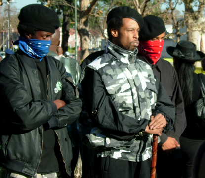
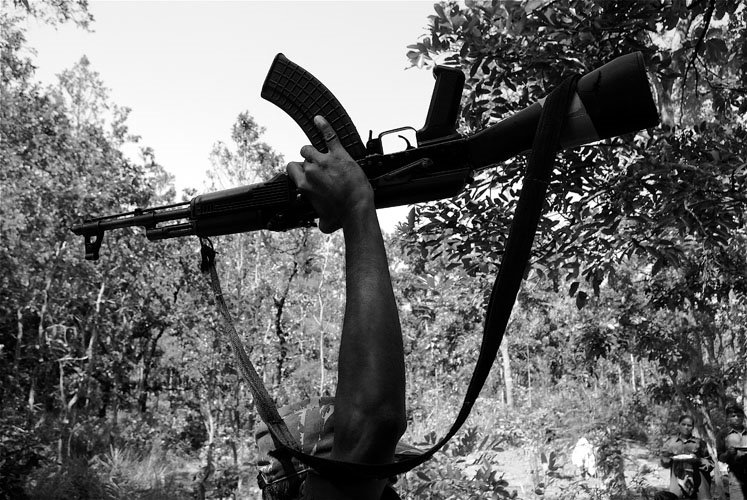

FRIDAY, MAY 16th, 2014
Issue #1 | Revolution In The Core: Vanguardizing The Lumpenproletariat, Triggering Class Dysphoria
WRITTEN by FENG HUANG aka IRON PHOENIX
Originally, I advocated a revolution of the First World, whereby First World workers seize control over the means of production and march towards a socialist workers’ state. And now, I realize the revolutionary situation in Kanada is not the revolutionary situation in Tsarist Russia. I feel historically and materially aware, whereas before, I was stuck in the First-Worldist, settlerist mindset...
What I’ve realized:
- First World workers (a majority of whom are White) are embourgeoisified.
- A majority of the productive forces are in the Third World, not in the First World.
- The land and productive forces of the First World do not belong to European workers.
Many Whites in Klanada do not realize that the country is ‘swag’. If they do, they don’t care. That’s because the majority of Whites in Klanada do not form a proletariat. Rather, they form an aristocracy of labour, a class of power grown out of 500 years of colonialism and genocide. When I say a “class of power”, I mean a class of privilege. Officially, slavery is abolished. But politically, economically, socially, culturally—the non-White nation is weighed down, held back by the White. This has been the case since the White man first arrived here. We colonized a labour force, brought in migrant workers from afar; The White man stood upon the backs of his slaves as pillars to his dominance were erected. We are standing upon them today.
If not the Euro-settler labour aristocracy, then who are the proletariat?
Up north, we’re not known for our slaying of Afrikans, but of the Onkwehón:we. Klanada’s campaign of genocide against the Indigenous peoples has never truly ended. Over a hundred million of them died building capitalism’s headquarters on their land; As recently as the 1960’s, the government has orchestrated the systematic murder of Indigenous[1]. In 2007, a 9-year-old living in a northern Ontario land reservation committed suicide[2]. If all culture is history, and all history is culture, all of our hitherto culture is a history of racism and oppression. By destroying Indigenous culture, we have created a racist and oppressive “Canadian” culture.
Historically, the proletariat are the Onkwehón:we[?].
We are living above a mass grave, upon stolen land, amidst structures built by stolen labour. Thus, true justice is inconceivable till all land and property is returned to the only people who have the ecological right to call this place their motherland: the Onkwehón:we. If we were to be forced to return to Europe by raft, it’d be an act of grace in comparison to the torment they’ve suffered because of our indifference. Their revolution is long overdue.
Whereas White KKKanada has refused, the rising Onkwehón:we nations are answering history’s call to make revolution. The time for national liberation is at hand, and we can choose to side with them... or perish, physically or in spirit.
Inspired by the struggle of the Onkwehón:we nations, I began to challenge my settlerism...
Beyond The Settlerist Mentality: A Single Step Became One Great Leap
Race is structural, an historical and materialist construct. Racism is ignorance plus power.
My ex-girlfriend’s best friend is ‘rez’, thus tax-exempt. When she informs a White employee of this, they recoil. This racism is blatant, even among the so-called “leftists” who argue that “multiculturalism” in this country has “gone too far”, and too many “privileges” are given to Onkwehón:we. Conveniently, they are forgetting that we owe them a massive debt, and that 70%[3] of Onkwehón:we do not live on land reservations and thus, pay federal taxes. But, this is the settlerist mentality: A racist sense of false-entitlement and an ignorance of White history.
And what “privileges” do we give to them, really? Exclusive membership cards to the poorest communities in the country? Death squads? Cultural and religious persecution?
It is the White man who has too many privileges.
I believe that the diversity of my family and upbringing, and the poverty I’ve experienced and witnessed growing up in a Black community has developed my political consciousness of this.
Here is my first, major self-criticism: I dogmatically adhered to doctrine written in Lenin’s time, blinding myself to the material reality and the revolutionary situation in KKKanada.
Not too long ago, I identified myself as a Marxist–Leninist. Over time, I began to uncover the ideological bankruptcy in Marxism–Leninism. This discovery was due in part to my honest historical-materialist analysis of the U.S.S.R. Beginning to realize the partialness of Leninism, my next step was Maoism. “Is Maoism more wholesome?”, I asked. Since the early 1960’s, Maoism has been prominent in the First World revolutionary movement, so why has it failed? Honest historical-materialist analysis again led me to question my trajectory. And finally, I was introduced to the movement to “unite real friends against real enemies”: the movement of Maoism Third-Worldism. Thoroughly convinced of its revolutionary potential, I have fully embraced it. It has given me a less abstract, more concrete view of society and its history.
It has led me out of the dark of the backwards First-Worldist mindset.
Only three nations now have a developed revolutionary social base capable of defeating capitalist-imperialism and building socialism and communism: India, the Philippines, and Nepal. These are mass movements, characterized by united fronts, popular fronts, and mass line. The so-called “communist movement” in Ukraine is characterized by transphobic, homophobic pro-Putin political lines of Russian exceptionalism. The rest of the First-Worldist movement is stagnating, and White-dominated. Only Maoism Third-Worldism is capable of defeating capitalist-imperialism and building world socialism and world communism.
Maoism Third-Worldism is, in essence:
- Denial of a White proletariat.
- Global Black, Brown, Yellow, Red, and revolutionary White solidarity.
What Maoism Thirld-Worldism is not:
- The promotion of the racial supremacy of non-White peoples.
- Denial of First World revolution.
Thirdworldophobia
Let us first and foremost declare that “no investigation means no right to speak”. Has the First-Worldist ‘movement-in-place’ made a revolutionary class analysis in their investigation? They reject Third-Worldism as “racist” sectarianism, and dogmatically declare that class burns race. This is incorrect. Third-Worldism is not and cannot be “racist” or sectarian, and we declare that empirically and materially, race has burned class! We cannot rely solely on Marx’s definition in making a revolutionary class analysis; We rely on Mao Zedong’s wisdom as well, and Engels’ classic works.
Comrade Mao wrote, in 1933[4]:
“Workers make their living wholly or mainly by selling their labour-power.”
Earlier, in 1847[5], Friedrich Engels wrote:
“The proletariat is that class in society which lives entirely from the sale of its labour and does not draw profit from any kind of capital; Whose weal and woe, whose very life and death, whose sole existence depends entirely on the demand for labour.”
Maoism Third-Worldism does not deny that there exist White workers, or even that there exist White proletarians. It does deny the existence of a White proletariat. That, collectively, White Klanadian and White Ameriklan workers form a class of labour nobility; more concerned about iPhones, cigarettes, and lottery tickets than revolution. The portion of the gross domestic product made by the service industry is 70%, whereas industry and agriculture are 28% and 2% respectively[6]. What means of production exist? What class struggle exists?
The class struggle is the antagonism existing between social groups over their relationships to the means of producing and distributing economic value.
The proletariat controls no means, owns nothing but its labour-power, which it is forced to sell to survive. Because they stand to gain by withdrawing their labour and fighting for control over means, the proletariat is the revolutionary group. Identifying the proletariat is critical to making revolution.
In my analysis, the First-Worldists have no right to speak, for they have made no investigation.
In AmeriKKKa, 46% of workers invested in a 401K workplace retirement plan, and thus, are earning a profit from capital. In other words, 46% of Amerikans do not depend entirely on the demand for labour to live. Further analysis of the remaining 44% divides it into an unemployed reserve army, minority groups, lumpenproletarians, immigrant workers, “illegal migrants”, etc. This is the true proletariat of North AmeriKKKa! Not the hegemonic White labour nobility! The proletariat is on the streets and behind bars, the captive and disenfranchised nations demanding respect for their humanity. A proletariat is not merely the working-class.
And it is not the class of White worker-economists demanding a higher imperialist rent.
Power Is Fearful Of Demise: White Power, Means White Fear
A few months ago, reactionary media began to report about a 9-year-old White boy who allegedly hanged himself due to “racist bullying”[7]. This type of reactionary reporting from the White Power structure is disingenuous and racist-in-itself. Racialized violence against non-Whites is an everyday affair, from the fatal shooting of Trayvon Martin to the hundreds of mass slaying by the bourgeoisie’s FBI or RCMP agents. And though I can safely say that I’ve never experienced racism in my life, my Onkwehón:we and Afrikan comrades tell me of their constant struggle with it, choked by the oppressive black gauntlet of White Power.
It’s safe to say that capitalist-imperialism is a concentration camp, a product of colonialism and racialism. In fact, it’d be safe to say that non-Whites are racialized peoples, whereas Whites are non-racialized people. Due to mass appeal, any report of anti-White “racism” is exaggerated, downplaying the daily struggles of the racialized nations. This type of reporting promotes an alarmist, ignorant response from Whites; Our forefathers invented the concept of ethno-nationalism, using Casta systems, in order to conquer, suppress and dominate.
To deny the structure of racism, to believe in a racism-in-reverse, is to believe that racism is a part of human nature and race is a part of human taxonomy.
The suicide rate for Onkwehón:we in Klanada is 24 per 100,000; The national rate is 2x less at 12 per 100,000[8]. It is a tragedy for the family that this young boy killed himself, but it is not a matter of national emergency. The fact that racialized minorities grow up nationally and culturally dysphoric is a side-effect to the White nation’s destruction of their cultural and national identity. It is as if, after 500 years of abuse, the ‘dog’ is biting back.
But, who are the real animals? The real savages are the pig police agents of White Power.
Black Power Equals Red Power Plus Blue Power
In Klanada, the Onkwehón:we nation is under attack by the fascistic, police-gangsterism of the Racist Canadian Mountain Pigs. A parallel can be drawn between their conditions and many other conditions of national oppression worldwide. One such line can be drawn between Onkwehón:we communities and Black communities in the United $naKKKes of Amerika.
Down below, the captive Afrikan nation is under attack by the Fascist Bureau of Intimidation. It is a history of struggle, Peruvian cocaine, ghettoization, and anti-communalism.
Black communities are plagued by brutal turf warfare furthering their national self-destruction. Wars organized by rival “gangs” made up of struggling, poverty-stricken youth. Wars that pale in comparison to the chilling atrocities organized and overseen by White AmeriKKKa against the peoples of the Third World, such as the atrocities committed at Abu Ghraib or Fallujah. We know the War on Drugs was a War on Black Power. We know that pig police exist to divide and conquer, not protect and serve. We know that Ameriklan policing is a genocide, not a civil service. The state is immune to persecution. The Black man is lucky to escape the grave. Last week, two dozen police officers stood and fired 377 rounds at a vehicle they pursued, killing the unarmed driver and passenger inside[8]. Systematic murder is a daily affair. For countless Black families, every new dawning is mourning in AmeriKKKa. Is this justice? No!
“Justice” is just the state’s codeword for genocide. True justice is self-determination.
This is the reality of Ameriklan “justice”. If Blacks defend their people and their communities from genocide, they face execution; If pig police slay Blacks, they attend award ceremonies.
Why the indifference? Why not stand up and make revolution, White AmeriKKKa?
This is precisely the historical call to arms that White AmeriKKKa has refused, and that the rising, new Afrikan nation has answered. Enough is enough! From a moral standpoint, captive nations are not committing a crime when they kill or thieve, because this is an occupied land, and thus, the occupiers’ politico-legal systems are unlawful by design. Until the stolen land and property is returned to its rightful owners, true justice is liberation or retribution.
Again, the time for a revolution is long overdue. The time for national liberation is at hand.
“Here We Go Again!”, “Same Old Shit Again!”, “Fuck The Police!”
Recently, an Afrikan comrade of mine introduced me to a new Black Power movement.
The New Generation of the Black Panther Party for Self-Defence, commonly known as the Black Riders Liberation Party is a revolutionary Black Power movement organizing and mobilizing Black communities, to put an end to the Black genocide in the United $naKKKes. The B.R.L.P. has been tremendously successful uniting rival gangs, namely Bloodz and Cripz, in a common struggle against capitalist-imperialism. Their just war for national liberation and self-determination begins anew at the breaking point of the Black Panther Party of the 1960’s and 1970’s.

Revolutionary Blood and Crip stand at the side
of a Black Rider’s Liberation Party general.
The Black Rider’s work is revolutionary work:
- Developing an advanced stage of the revolutionary theory of intercommunalism.
- Strengthening Black Power’s self-defence strategy.
- Organizing and mobilizing Black communities for the struggle against capitalist-imperialism.
- Building a united front with AmeriKKKa’s other national liberation struggles.
- Promoting camaraderie throughout the whole Black nation.
- Vanguardizing the advanced revolutionary element: THE LUMPENPROLETARIAT.
Settler Allyship
The Ameriklan state is the political gun of the Ameriklan bourgeoisie, a majority of whom are White settlers. In foreign lands, soldiers are police; In domestic lands, police are soldiers. Police are the #1 enemy of any colonized, captive nation in Kanada and Amerika. Thusly, police are the #1 friend to the White settlers of the labour aristocracy. The police defend its property, its power, its privilege. By proxy, this makes any struggle against the pig police state, a struggle of majority against the Klanadian and Ameriklan labour aristocracy minority.
The First-Worldist argument that “not all Whites oppress; White capitalists oppress” is invalid. A majority of Whites are net-exploiters, and a majority of non-Whites are victims of this net-exploitation. Primarily in the imperialist core, race has burned class. The primary dialectical contradiction in the imperialist core is a contradiction between the White labour aristocracy and the non-White proletariat. Class struggle between bourgeoisie and labour aristocracy is dead, and any anti-bourgeois elements of the labour aristocracy are a vast minority.
So, who are our real enemies and who are our real friends? It is only by betraying the class of reactionary labour aristocracy, that we are revolutionary as White socialists. Our comrades are the captive Black, Brown, Red, Yellow nations! Towards revolutionary settler allyship!
Burn Down The Global Labour Aristocracy
Afrikan anti-colonialist leader Amílcar Cabral correctly stated this in 1970[10]:
“History teaches us that, in certain circumstances, it is very easy for the foreigner to impose his domination on a people. But, it also teaches us that, whatever may be the material aspects of this domination, it can be maintained only by the permanent, organized repression [cultural hegemony] of the cultural life of the people concerned.”
Thus, a national liberation must be, in part, a cultural resistance. For the rising new nation, building a culture of resistance is building a dual power! What is dual power? Dual power relates to the strategy of building effective ideological apparatuses, separately from the existing and oppressive ISA’s, to serve the interests of the oppressed. Dual power is, in essence, the construction of new state-forms and the transforming of them, into forces strong enough to seize power over the present state.
An example of dual power in practice would be the Black Panther Party’s liberation schools.
In other words, to combat cultural hegemony is to build schools and headquarters of liberation!
- Build schools of counter-hegemony to decolonize ghettoized youth.
- Organize publishing houses and street teams to distribute revolutionary agitprop in ghettoized communities, such as quotebooks and handbooks.
- Promote revolutionary cultural works, such as revolutionary art, poetry and hip-hop.
The need for counter-hegemony and a culture of resistance goes beyond revolutionary science, delving into basic human psychology: the concept of existential terror. Existential terror is a psychological struggle between one’s desire to live and one’s realization that death is inevitable. This inner-struggle produces a psychological “terror”. The psychological solution: culture. Cultural values serve the people by providing a meaning to life and giving them a purpose. What better, then, to offer the colonized youth a culture of resistance and liberation, to give their life revolutionary meaning and a revolutionary purpose?
To understand more concretely, less abstractly how the struggle for national liberation is inseparable from the construction of a culture of resistance, I recommend a reading of Cabral’s speech in its entirety.
Amílcar Cabral was assassinated on January 23, 1973.
When Race Burns Class, Burn Down Its Headquarters
That’s right! Our greatest enemy is the bourgeoisie, make no mistake. But, if we want to live in a world of peace and humanity, our immediate contestant in the imperialist core is the net-exploiters of the world proletariat, the vanguard of reaction: the labour aristocracy! To burn down the headquarters of capitalist-imperialism and cultural hegemony, we must unite revolutionary class traitors and revolutionary national liberation movements in common struggle. To fight, we must build the broadest possible united front, a united front between all struggles: women’s struggles, national liberation struggles, LGBTQ+ struggles, and practice solidarity with the wider forces of the world revolution—the revolutionary Third World proletariat!
The communist must have largeness of mind. Looking beyond the smallness of First-Worldism is a step towards the light.
In conclusion, to exceed beyond the stagnating First World revolutionary movement, communists everywhere must grasp the truth: dual power grows out of the barrel of a gun. The hegemonic power of the First World is in conflict with the powerlessness of the Third World. Building a Third World revolutionary power is our great leap. In order to make our movement a revolutionary movement again, we must shed our First-Worldist mentality, and embrace a Third-Worldist mentality. And our revolutionary work must consist of solidarity and allyship primarily, and triggering of class dysphoria secondarily. We can hope that, as the struggle intensifies globally, and in the imperialist core specifically, a sense of class dysphoria will break the foundations of the First World labour aristocracy, fracturing it completely into visible camps of pro-revolutionary and anti-revolutionary forces.
Towards revolutionary national liberation, reparations, allyship and solidarity!
Towards Global People’s War and Global New Democratic Revolution!
Long Live Onkwehón:we! Long Live Afrika!
Long Live all captive nations in the prison houses of KKKanada and AmeriKKKa!
Down with Global White Power! All Power to the People!

A Naxal gun raised to the call of revolution!
Note: Throughout this article, many plays on words are used. This is a way of provoking language questions—the historical origins and meanings behind the words we use.
Note: In the context of Third World revolution, the “Third World” consists of Third World and Fourth World peoples. For the sake of convenience, only “Third World” is used.
If you wish to make a criticism of my work, email me. And if you wish for your identity to remain anonymous, please include a request for that in your email.
Sources
- Canada’s Hypocrisy - Sri Lanka Ministry of Defence
- “Kashechewan: A Community In Crisis” - The Toronto Star
- Where Do Aboriginal People Live? - Statistics Canada
- How To Differentiate The Classes In The Rural Areas - MIA
- The Principles Of Communism - MIA
- Gross Domestic Product Composition - CIA
- “Boy Found Hanged Was Bullied For ‘Being White’” - Daily Mail UK
- Suicide Among Aboriginal Peoples In Canada - AHF
- Grotesque Overkill - Common Dreams
- National Liberation & Culture - Onkwehón:we Rising